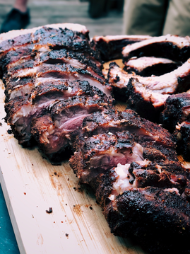

Grilled BBQ Ribs

INGREDIENTS
- 3 slabs park baby back ribs
- 1 cup Dry Rub (this is my Dry Rub Recipe) – use more if you wish
- Your favorite BBQ sauce
- 1 cup honey
- 3 cups apple juice
DIRECTIONS
1.Prepare your grill for indirect heat by only lighting half of it OR if you are using a Big Green Egg, use the plate setter. You will want to heat the grill to 275-300 degrees.
2.Prep the ribs: Trim any excess fat or loose pieces of meat from the ribs. Flip the ribs over so that the bone side is up. Use a knife to get under the membrane, then use your hands to pull the membrane up. The membrane is going to be slippery. Use a paper towel to help you grip the membrane if needed. You don’t HAVE to do this step, but you’ll get the best result if you do.
3.Rinse the ribs under cold water and pat dry.
4.Season the ribs with the Dry Rub. You will use about 1/4 of the rub on the bone side of the ribs and 3/4 of the rub on the meaty side.
5. When the grill has reached a steady temperature and is no warmer than 300F, place the ribs on the grill, making sure they are NOT above the flames. You are cooking these over indirect heat!
6.You can also use your favorite smoking chips if you wish, to add flavor. Just make sure to soak them in water, according to package directions. I usually soak mine for about 30 minutes.
7.Cook the ribs for about 90 minutes, making sure that the ribs don’t start to burn.
8.Remove the ribs from the grill and slather them with 1 cup honey.
9.Place the ribs in a foil pan that will fit on the grill, again, over indirect heat. Pour in about 3 cups apple juice, or enough so that there’s about 1 inch of apple juice in the bottom of the pan. Cover the pan with foil and place it on the grill away from the direct heat.
10.Continue cooking the ribs for another 45 minutes to 90 minutes, or until the ribs are tender and just starting to fall off the bone.
11.Remove the ribs from the pan and place them directly on the grill. Brush the ribs with your favorite sauce and cook for about 10 minutes on medium low heat, until the BBQ sauce starts to caramelize.
BACK TO HOME